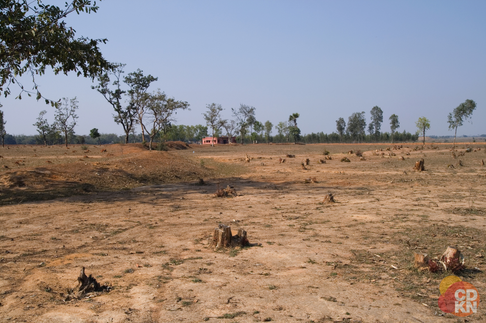
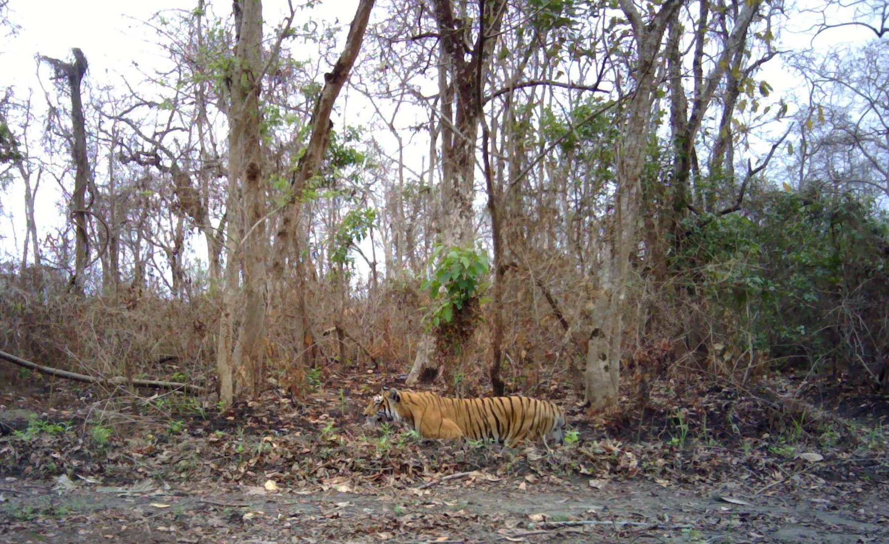

Le tigre du Bengale aussi appelé tigre royal du Bengale ou tigre Indien est un félin, qui est la sous-espèce de tigre la plus connue.
| Poids | 110 à 160 kg : femelles ; 180 à 250 kg : mâles |
| Longueur queue | 60 à 100 cm |
| Vitesse de pointe | 60 km/h |
| Caractéristiques du corps | Corps massif,fourrure épaisse, pattes larges et puissantes |
| Longueur des griffes | 8 à 10 cm |
| Couleur du pelage/fourrure | Jaune-orange rayé de bandes noires ; blanc sur la partie inférieure |
| Bruit/Cri | Rugissement et feulement ; Rugit ou feule |
| Régime alimentaire/ Type de nourriture | Carnivore ; Se nourrit de cerfs, d'antilopes, de singes, de buffles d'Asie, de gaurs |
| Vie sociale | Animal solitaire et territoral ; Activité diurne et nocturne |
| Prédateurs | N'en n'a pas, il se trouve au sommet de la chaîne alimentaire |
| Technique de chasse | Chassent leurs proies à l'affus et bondissent sur elles |
| Nom femelle ; Nom du petit | La tigresse ; Le tigreau, tigron ou tigrou |
| Maturité sexuelle | 3 à 4 ans : Tigresse ; 4 à 5 ans : tigre mâle |
| Durée de vie | 15 ans : Etat sauvage ; 25 ans : Captivité |
Aujourd’hui son nombre d’individus diminue constamment. Sa disparition dans le monde est en partie due à sa fourrure qui est très convoitée ainsi que certains de ses organes tels que ses dents, ses os, ses yeux, et même son sang. Mais sa disparition est aussi du à la dégradation de son habitat. A ce jour, il ne reste qu’environ 3000 individus de cette espèce dont 1500 à l’État sauvage.
 Il y a tout de même des solutions pour éviter que le tigre du Bengale ne disparaise mais pour cela, le gourvernement doit faire un ensemble d'actions :
Aujourd'hui, de nombreuses personnes sont mobilisées pour éviter que le tigre ne dissparaisent. Il existe donc différentes associations qui défendent en partie les tigres comme :
Il existe évidement de nombreuses autres assication qui essaient de préserver et sauver ces tigres.
https://fr.wikipedia.org/wiki/Tigre_du_Bengale
https://www.futura-sciences.com/planete/definitions/zoologie-tigre-bengale-8011/
http://www.humanima.com/decouverte/fr/article/tigre-du-bengale
https://www.rtbf.be/emission/le-jardin-extraordinaire/detail_inde-le-tigre-du-bengale-un-seigneur-en-danger?id=10415297